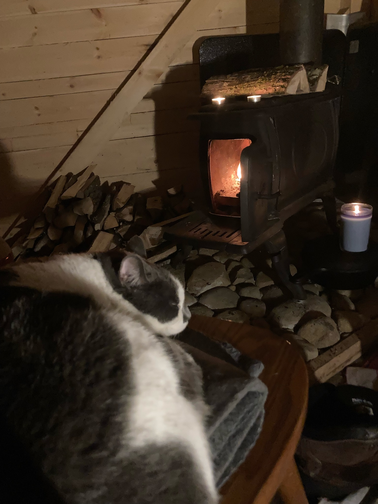

Life off the grid in Grafton, NH
June 15, 2020. The first firepit.
Cutting logs to size for the mill.
To move massive logs without a tractor, we built a zipline. It took a few days of engineering and assembly,
but ultimately it was able to move 1000lb logs with ease, and was theoretically capable of double. Riding
the zipline in tree straps was just a bonus. We also used the trusty tripod to lift logs in difficult
situations.
Moving the 500lb sawmill across the footbridge and assembling it.
One of our first projects was making furniture for my sister's wedding. After a month and a half straight of
rain, we had just a few weeks to turn living trees into furniture. We started by making live edge pine benches
birch stumps for the ceremony.
Rough-sawn picnic tables and a wooden dance floor which fit the rustic outdoor theme, courtesy of
the Wild Meadow Boys.
After the wedding we started to get ready to build the cabin. Left: Measuring and staking the ground before
digging the foundation. Center: Digging holes for the main cabin's 11 foundation piers. Right: A 6x7x6 hole
for the fireplace foundation slab to be poured.
The weather got cold very quickly in the fall, so we decided to halt all main cabin activity and focus on making
a small, temporary cabin, which will be a guest cabin in the future. For more about our cabin construction click
here.
A look inside the cabin. The gaps visible between the logs were sealed just before the winter came to allow
for maximum shrinkage. The lights, which run off a 12V deep cell battery, are a newer addition, and would
have been much appreciated during the dark days of winter.
Left: slow roasting a leg of lamb. Right: vegetable curry. Both courtesy of guest chef Marcello.
Hiking up the hill with a hatchet and a shovel to make some skiing trails with our buddy Marcello.
We welcomed a variety of animals over the summer. Their cuteness outweighed my self-control and several days
turned into emergency construction days due to a local animal housing shortage. We had a total of
4
pigs, 8 ducks, 4 chickens, 3 humans and one cat before we had a permanent place to live. Oops...
We used mill scraps to build a "Piggie Palace" where we kept four Ossabow pigs. One of them pooped in my
pocket, which I'm still mad about.
It took a while to master the art of baking on an open fire.

Mags, the cat, enjoying her new life in the woods.
Raven's sister and her fiancée came over for Christmas in the cabin.
Alfie, the newest member of the Wild Meadow Boys.
Thank you to all of our family and friends who have helped make this journey so much fun. We can't wait
to get started on our main cabin and to have everyone up for our Hogtoberfest 2.0!